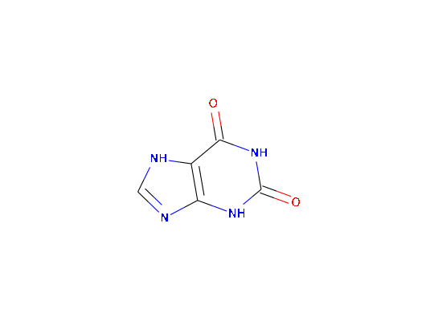

chent
An R6Class generator object
The class is initialised with an identifier. Chemical information is retrieved from the internet. Additionally, it can be generated using RDKit if RDKit and its python bindings are installed.
identifierinchikeysmilesmwpubchemrdkitPicturepicture object obtained using grImportoct <- chent$new("1-octanol", smiles = "CCCCCCCCO") oct$try_pubchem()http://eutils.ncbi.nlm.nih.gov/entrez/eutils/esearch.fcgi?retmax=100000&db=pccompound&term=1-octanol Found 1 entries in PubChem, using the first one. http://eutils.ncbi.nlm.nih.gov/entrez/eutils/esummary.fcgi?retmax=100000&db=pccompound&ID=957print(oct)<chent> Identifier $identifier 1-octanol InChI Key $inchikey KBPLFHHGFOOTCA-UHFFFAOYSA-N SMILES string $smiles CCCCCCCCO Molecular weight $mw: 130.2 PubChem synonyms (first 10): [1] "1-octanol" "Octan-1-ol" "octanol" "N-octanol" "Capryl alcohol" "Octyl alcohol" [7] "n-Octyl alcohol" "caprylic alcohol" "Heptyl carbinol" "1-Hydroxyoctane"plot(oct)caffeine <- chent$new("caffeine", source = "pubchem")http://eutils.ncbi.nlm.nih.gov/entrez/eutils/esearch.fcgi?retmax=100000&db=pccompound&term=caffeine Found 217 entries in PubChem, using the first one. http://eutils.ncbi.nlm.nih.gov/entrez/eutils/esummary.fcgi?retmax=100000&db=pccompound&ID=1188print(caffeine)<chent> Identifier $identifier caffeine InChI Key $inchikey LRFVTYWOQMYALW-UHFFFAOYSA-N SMILES string $smiles C1=NC2=C(N1)C(=O)NC(=O)N2 Molecular weight $mw: 152.1 PubChem synonyms (first 10): [1] "xanthine" "2,6-Dihydroxypurine" "69-89-6" "Xanthin" "2,6-dioxopurine" [6] "Pseudoxanthine" "Isoxanthine" "Xanthic oxide" "1H-Purine-2,6-diol" "Purine-2,6-diol"caffeine$get_rdkit() plot(caffeine)